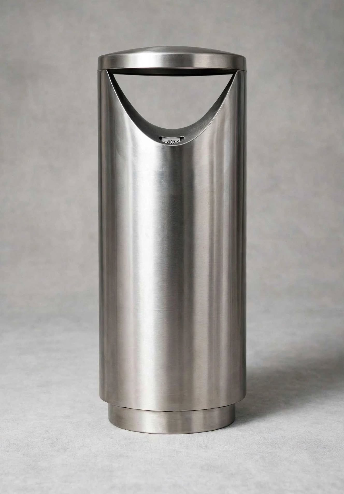
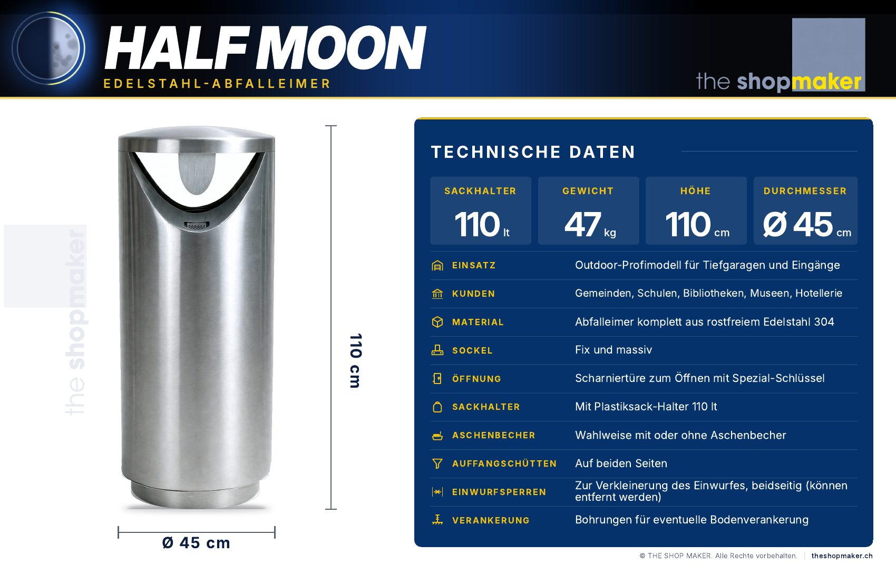
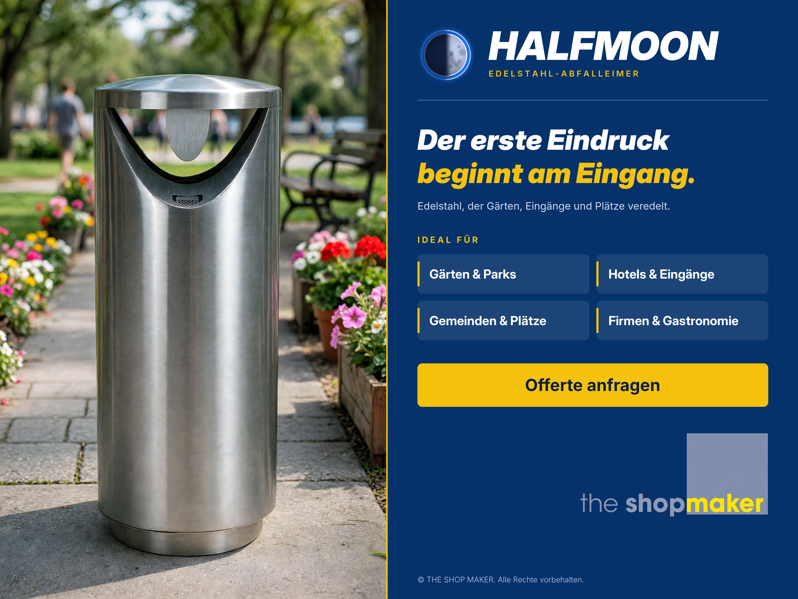
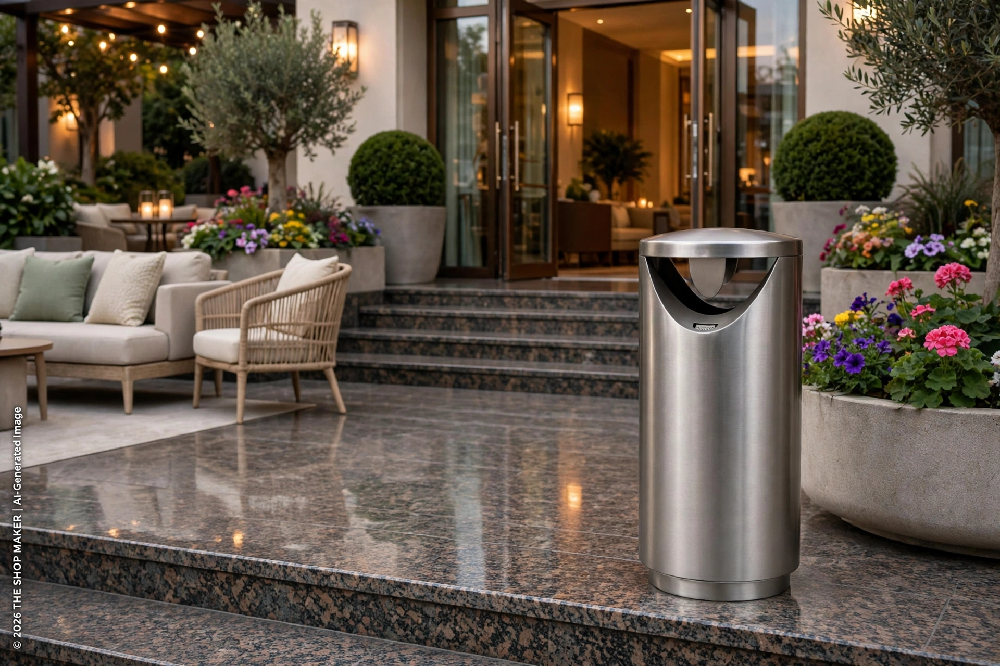
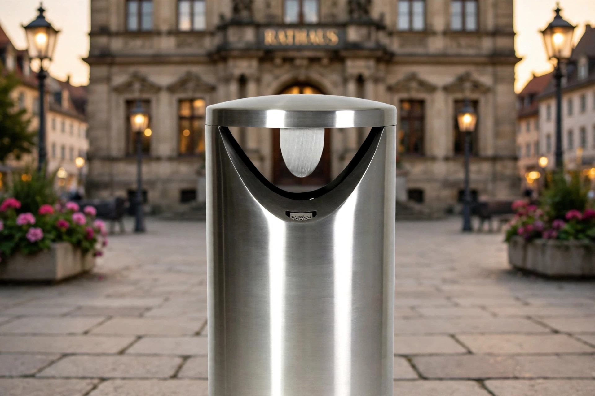
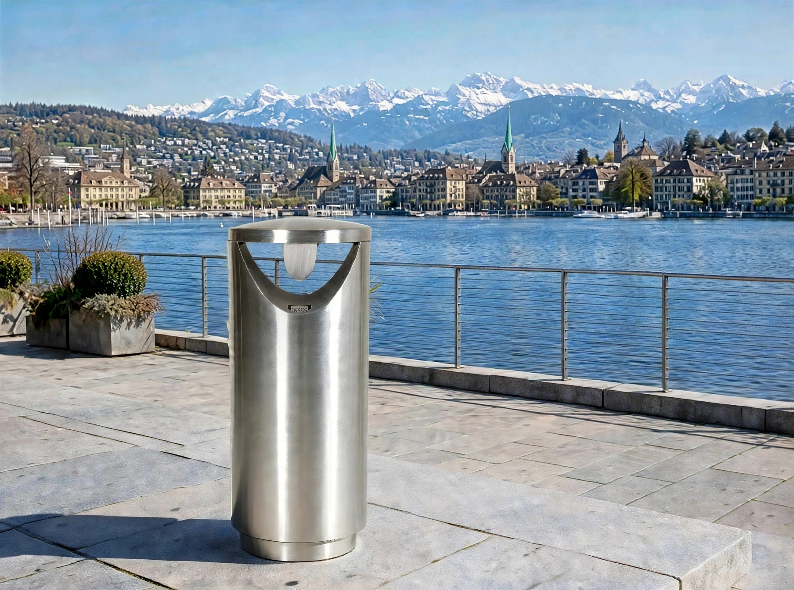

HALFMOON
Edelstahl-Abfalleimer · Modell 01 · Outdoor
Das Outdoor-Profimodell für Tiefgaragen und Eingänge. Komplett aus rostfreiem Edelstahl 304, mit festem Sockel, Scharniertüre und Sackhalter für 110 Liter.
- 110 Liter
- 110 cm hoch
- Ø 45 cm
- 47 kg

Technische Daten
Alle Angaben stammen aus dem Datenblatt des Herstellers The Shop Maker.
- Einsatz
- Outdoor-Profimodell
- Fassungsvermögen
- 110 Liter
- Höhe
- 110 cm
- Durchmesser
- Ø 45 cm
- Gewicht
- 47 kg
- Material
- Komplett aus Edelstahl 304
- Sockel
- Fix und massiv
- Öffnung
- Scharniertüre, Spezial-Schlüssel
- Sackhalter
- Für Plastiksäcke bis 110 Liter
- Auffangschütten
- Auf beiden Seiten
- Einwurfsperren
- Beidseitig, abnehmbar
- Verankerung
- Bohrungen für Bodenanker
- Aschenbecher
- Optional
- Lieferung
- In die ganze Schweiz
Das Datenblatt.
Alle technischen Daten von HALFMOON auf einer Seite, als PDF zum Speichern und Weitergeben.

Ausstattung im Detail.
Was HALFMOON für den Einsatz im Aussenbereich mitbringt.
- 01
Fester, massiver Sockel
Der Abfalleimer steht auf einem festen Sockel aus Edelstahl.
- 02
Scharniertüre mit Spezial-Schlüssel
Das Leeren und der Sackwechsel erfolgen über die Scharniertüre, die sich mit einem Spezial-Schlüssel öffnen lässt.
- 03
Sackhalter für 110 Liter
Ein Plastiksack-Halter nimmt Säcke mit bis zu 110 Litern auf.
- 04
Auffangschütten beidseitig
Auf beiden Seiten des Abfalleimers sind Auffangschütten angebracht.
- 05
Einwurfsperren
Sie verkleinern den Einwurf, sind beidseitig vorhanden und lassen sich entfernen.
- 06
Bodenverankerung möglich
Bohrungen im Sockel erlauben eine Verankerung am Boden, wenn der Standort es verlangt.
- 07
Aschenbecher optional
Auf Wunsch mit integriertem Aschenbecher. Bitte bei der Offertanfrage angeben.
Wo HALFMOON passt.
HALFMOON ist als Outdoor-Profimodell für Tiefgaragen und Eingänge ausgelegt. Auch in Gemeinden und auf öffentlichen Plätzen, in Spitälern, Schulen, Bibliotheken, Museen und in der Hotellerie findet er seinen Platz, überall dort, wo viele Menschen vorbeikommen.
Soll der Abfalleimer im Innenraum stehen, etwa vor dem Lift, ist FULLMOON die passende Wahl.

HALFMOON im Einsatz.
Eingang, Rathausplatz, Promenade: so wirkt der Outdoor-Abfalleimer.



Bilder mit dem Hinweis «Visualisierung» sind computergenerierte Darstellungen.
Häufige Fragen
Gibt es HALFMOON mit Aschenbecher?
Ja. Der Aschenbecher ist optional. Bitte geben Sie Ihren Wunsch bei der Offertanfrage an.
Kann HALFMOON am Boden verankert werden?
Ja, der Sockel hat Bohrungen für eine mögliche Bodenverankerung.
Welche Säcke passen hinein?
Der Plastiksack-Halter ist für Säcke mit 110 Litern ausgelegt.
Was kostet HALFMOON?
Den Preis erhalten Sie mit der Offerte von The Shop Maker. Bei grösseren Mengen lohnt sich die Anfrage vorab.
Wohin liefern Sie?
In die ganze Schweiz.
Offerte
anfragen.
Nennen Sie uns Menge und Einsatzort. The Shop Maker meldet sich mit einem verbindlichen Angebot.
HALFMOON und FULLMOON sind Abfalleimer der Marke The Shop Maker.
Diese Seite informiert über die beiden Modelle, ihre Einsatzbereiche und die Wahl des passenden Abfalleimers. Die Marke, die Offerte, die Bestellung und die Lieferung in die ganze Schweiz laufen über The Shop Maker.
- Marke
- The Shop Maker
- Offerte und Bestellung
- theshopmaker.ch
- Lieferung
- In die ganze Schweiz